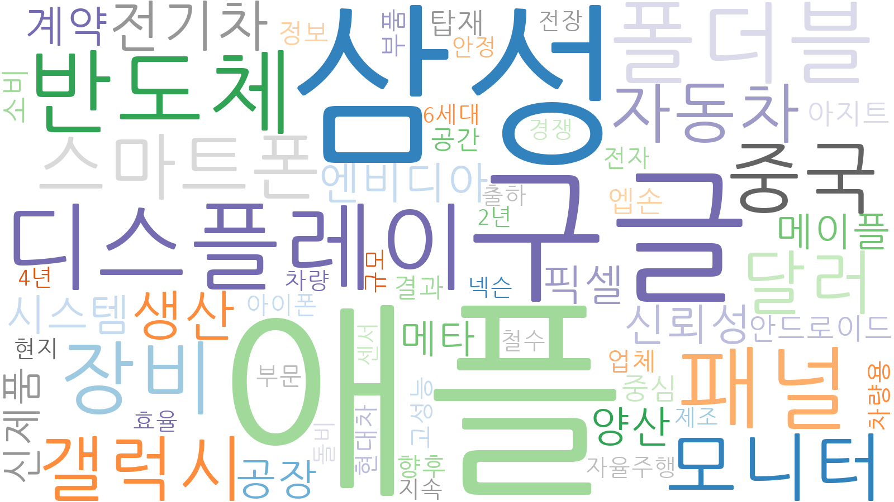
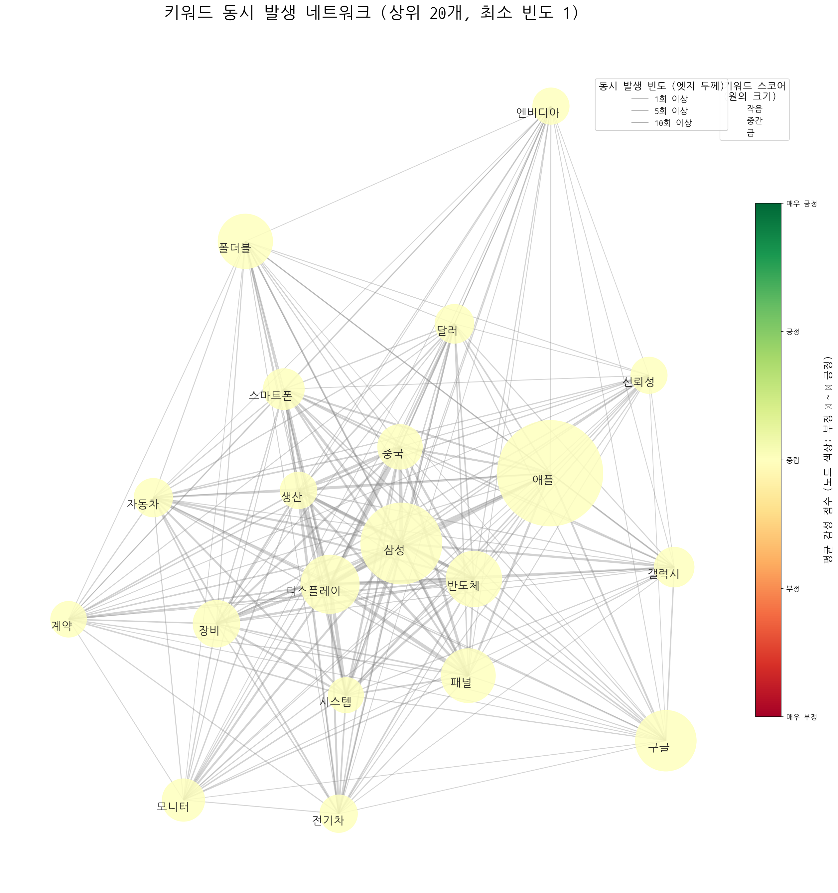
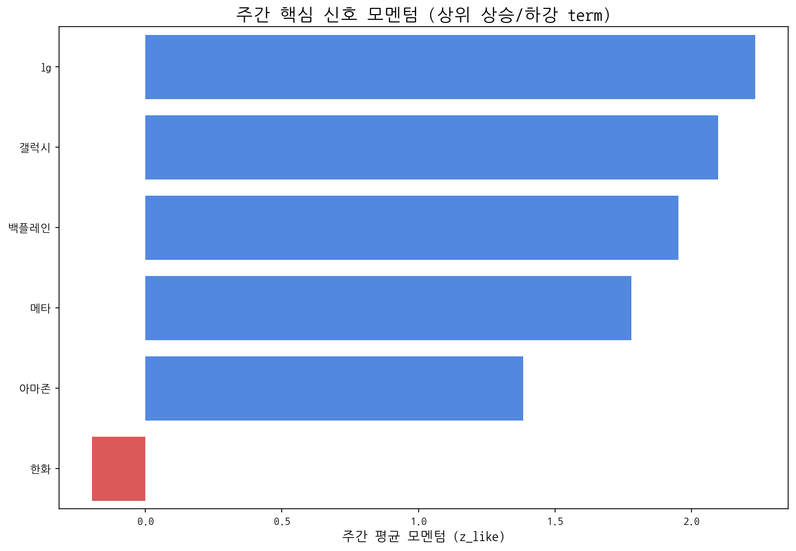

| 키워드 | 주간 누적 점수 |
|---|---|
| 애플 | 9.27705 |
| 삼성 | 5.49073 |
| 구글 | 3.07786 |
| 디스플레이 | 2.84782 |
| 반도체 | 2.58505 |
| 폴더블 | 2.48204 |
| 패널 | 2.43636 |
| 장비 | 1.82381 |
| 중국 | 1.67013 |
| 모니터 | 1.50424 |

키워드 간 동시 출현 빈도를 기반으로 주요 테마 클러스터를 시각화합니다.

| cluster_id | keywords |
|---|---|
| 0 | 결과, 철수, 지속, 안정, 경쟁 |
| 1 | 애플, 삼성, 구글, 스마트폰, 갤럭시, 안드로이드, 아이폰 |
| 2 | 자동차, 전기차, 현대차, 차량용, 차량 |
| 3 | 반도체, 모니터, 픽셀, 센서 |
| 4 | 디스플레이, 폴더블, 패널, 장비, 엔비디아, 신뢰성, 계약, 시스템, 양산, 신제품, 메타, 메이플, 중심, 엡손, 탑재, 아지트, 정보, 부품, 향후, 업체, 공간, 고성능, 전자, 넥슨, 규모, 자율주행, 현지, 돌비, 출하, 4년, 2년, 전장, 6세대 |
| 5 | 달러 |
| 6 | 생산, 공장, 소비, 부문, 효율, 제조 |
| 7 | 중국 |
| 경쟁사 | 주간 총 언급량 | 주간 평균 모멘텀 |
|---|---|---|
| 삼성전자 | 75 | 0.43 |
| lg디스플레이 | 7 | 0.5 |
| boe | 5 | 0.97 |
| csot | 2 | 0.54 |
| 삼성디스플레이 | 1 | 0.62 |
| term | cur | z_like | total |
|---|---|---|---|
| 게이밍 | 8 | 2.6 | 21 |
| ar | 5 | 2 | 34 |
| 아이패드 | 5 | 2 | 13 |
| 백플레인 | 4 | 1.953 | 4 |
| 패널 | 5 | 1.864 | 16 |
AI 기반 주요 신호 해석:
| 핵심 신호 | 주간 총 언급량 | 일별 모멘텀(z_like) 추이 |
|---|---|---|
| 삼성 | 86 | -1.0 → -1.3 → -0.8 → 5.3 → 2.7 → 1.2 |
| 삼성전자 | 75 | -1.8 → -1.3 → -1.4 → 2.5 → 0.9 → 3.7 |
| lg | 58 | -0.1 → 5.2 → 2.4 → 1.5 |
| lg전자 | 45 | -0.3 → -0.6 → 4.5 → 2.0 → -0.4 |
| oled | 35 | 0.1 → -0.6 → 0.3 → 2.0 → 1.7 → 0.2 |
